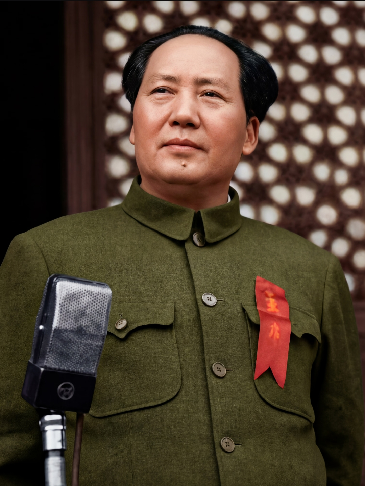
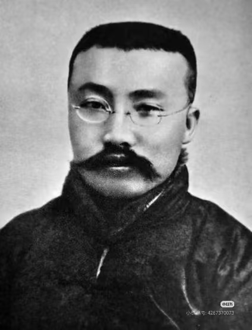
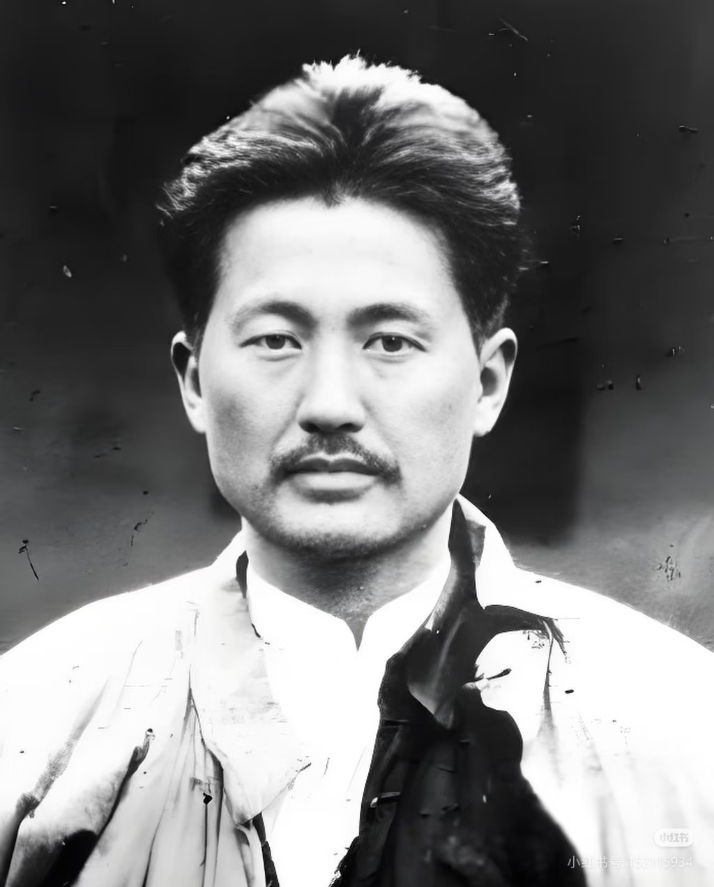
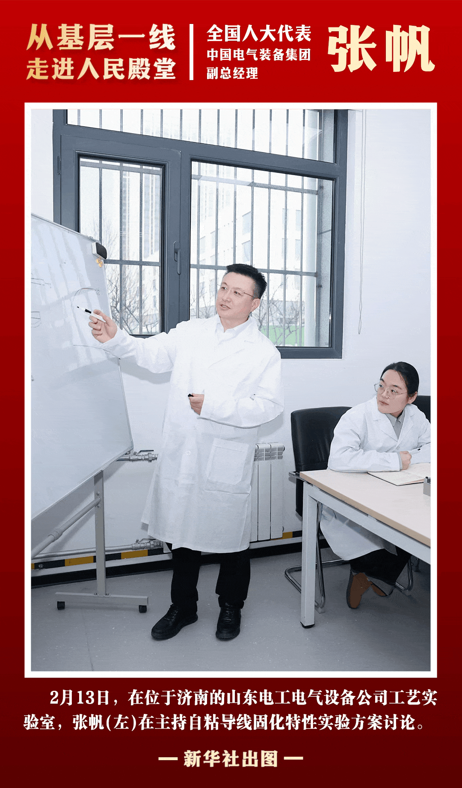
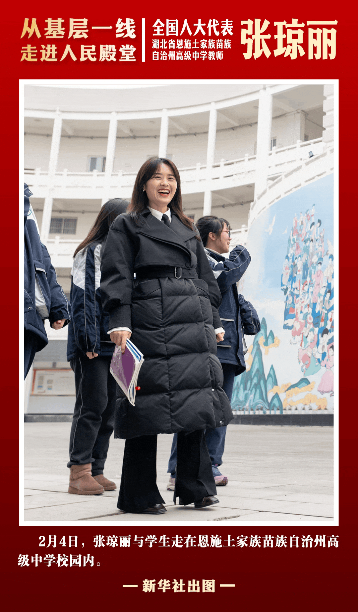

领袖风采
GREAT LEADER
伟大领袖

毛泽东
中国共产党、解放军和中华人民共和国的主要缔造者带领中国人民彻底改变了近代以来中华民族任人宰割的悲惨命运，让中国人民从此站起来了。
革命先驱
REVOLUTIONARY PIONEERS
革命先驱

李大钊
中国共产主义运动的先驱“铁肩担道义，妙手著文章”。他率先在中国传播马克思主义，为建党作出了重要贡献。
民族英雄

方志敏
无产阶级革命家、军事家他在狱中写下《可爱的中国》，字字泣血，表达了对祖国深沉的爱与对革命必胜的信念。
时代楷模
MODEL OF THE TIMES
脱贫攻坚楷模

黄文秀
“最美奋斗者” / 原百坭村第一书记她放弃大城市机会回乡扶贫，带领群众脱贫致富。年仅30岁不幸遇难，谱写了新时代的青春之歌。
2026两会新声
NEW VOICES FROM TWO SESSIONS
央企担当

张帆
中国电气装备集团副总经理致力于推动能源装备智能化转型，为保障国家能源安全与特高压技术突破贡献央企力量。
四川基层

郑望春
四川省基层代表 /古路村党支部书记扎根巴蜀大地，带领乡亲们发展特色农业产业，用朴实行动讲述乡村振兴的生动故事。
湖北一线

张琼丽
湖北省基层代表 / 高级中学教师长期奋战在社区治理第一线，是居民口中的“贴心人”，为提升城市治理温度建言献策。